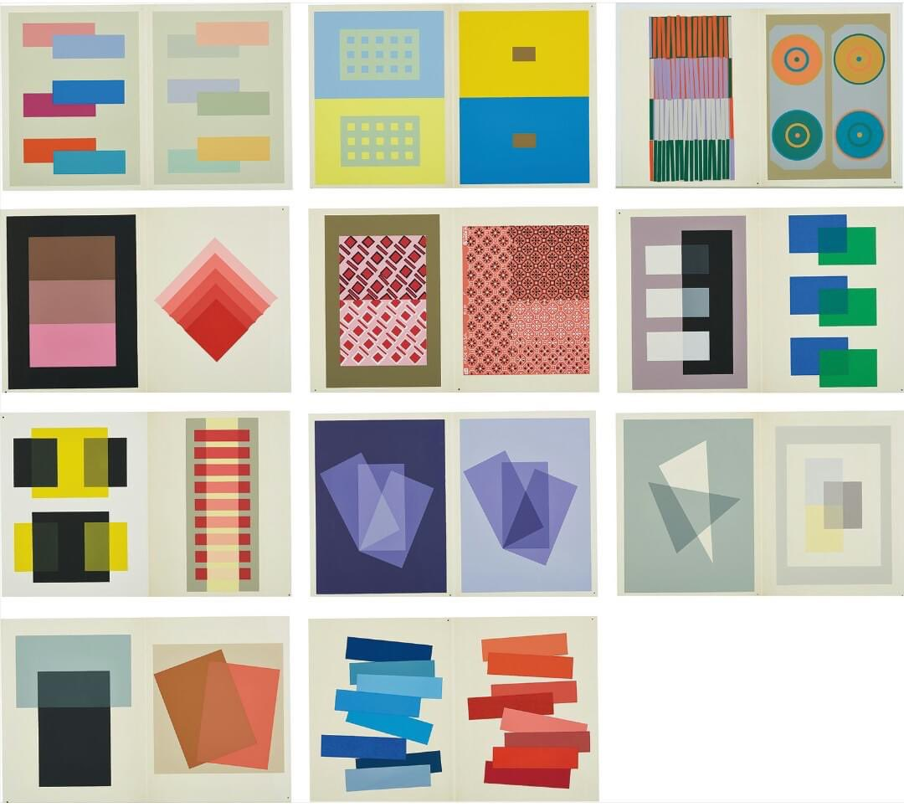

it's torture for me to watch them but i have to do this

i dreamt that i was back at my place. i was away for a weekend and came back to a couple using my apartment as a place to do a folkore themed roleplay/altar, using my bed and all my stuff and the rest of the house was filled with dog shit and cal didn't want me to move in with him. the walls were flimsy. looking over the half wall into my apartment filled with girls in flowy dresses and flower crowns chanting, golden light. we breathed out tiny red particles. someone smashed the wall down on the other side.
another epiphany this morning: sense, memory. different from the image of a two sided mirror and an operating room filed with everyone i've ever observed, more true maybe, or less true.

i sit at my desk and google slurs for $30/hr. For eight hours a day, I mine my brain for new depravities; digging in the dirt, i shake up thoughts—my mind faintly abuzz, a slipstream river running, sword-shaped twigs on its back and sharp craggy rocks in its belly. “babe, can you think of an example of hate speech? no, i’ve already done that one to death.” the air outside smells of lox, stepping outside i’m swimming through vinegar and smoke. paddling
I saw god Not bobbing in the ocean at sunrise But awoken at five am by a boom of thunder The sky aglow Pale light bursting through the outlines of the windowshade Impossibly bright
I walk home drenched in sweat, talking to my mom about swimming. No one in my family likes the beach, except for me. How can she see a lake and not long to enter it? “You’ve always been that way,” she says. I stop at the bookstore across from the park, joke with the clerk, “the air’s so heavy out there it feels like you’re swimming.” i grab a book at random, wrapped in cellophane, something to read while i wait for my haircut. I wade through the heat to a cafe, tear open the plastic and read opening lines about swimming in a lake at dawn, the “bolt of pure aliveness” upon entering the water. I leave the air conditioned salon and step back out into the thick evening; thunder grumbles in the distance. Halfway through the short journey home, the sky opens up. There’s no saving the haircut, so i submit, my face streaming with water, dress soaked through. I look up at the sky and feel that bolt, fragrant lindens dripping, sun bursting through a wall of rain.